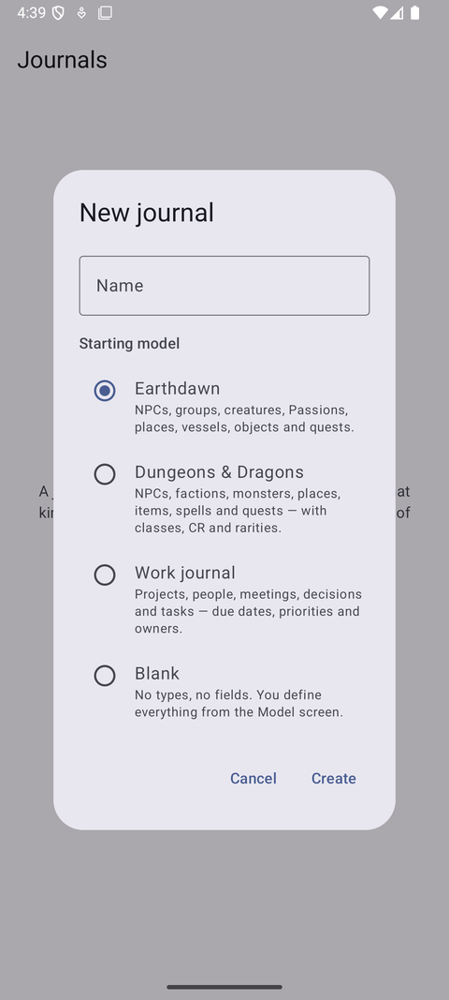
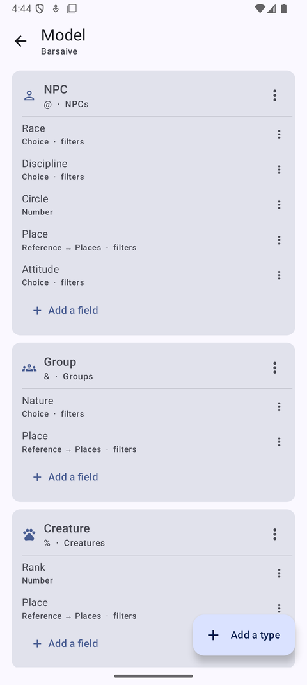
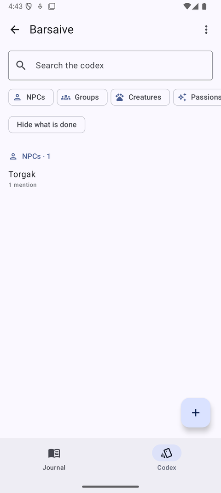
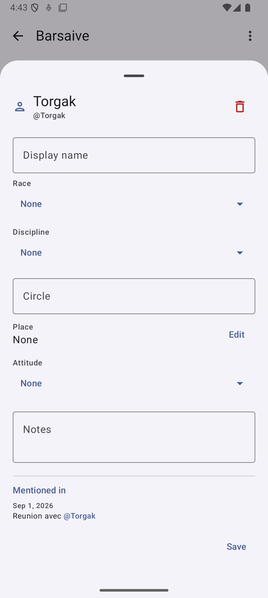

Français · English
A journal whose data model you define yourself.
Chronicle does not decide what you are writing about. You create a notebook, define what kinds of thing it keeps track of, and give each of them the fields it needs. Then you write.




The composer is always on screen. Type a mention character and the codex opens mid-sentence; pick a name that has never been written down and its entry appears with nothing but that name, ready to be filled in later if it ever earns it.
Every entry knows every note it appears in, without anyone having written that list. Rename an entry and every note that ever mentioned it reads the new name — because no note ever held the name, only a reference.
An entry type is a codex category: NPC, place, project, task. A field is a text, a number, a date, a yes/no, a choice from a list you write, a set of tags, or a reference to another entry. Mark a field filterable and it becomes a row of chips above the list. Nothing in the app knows what a race or a due date is.
Chronicle is in closed testing on Google Play.
The public store page follows once testing ends. Until then, feedback and bugs go to the tracker below.
Bugs, requests and questions go to the GitHub issue tracker. It is the most useful place for them: a public report helps the next person who hits the same thing.